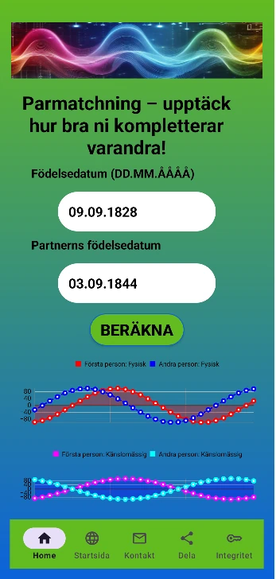
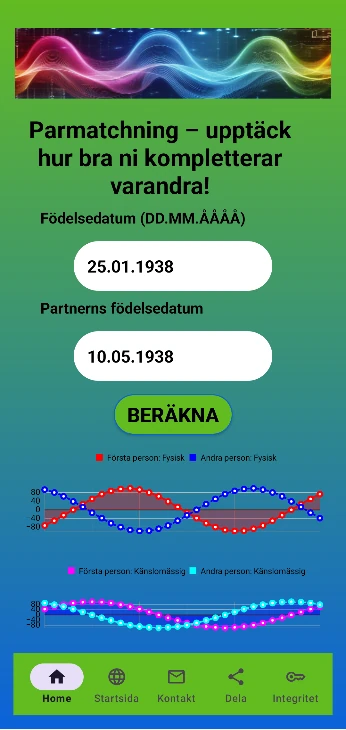
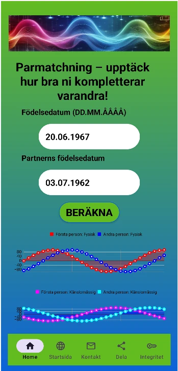
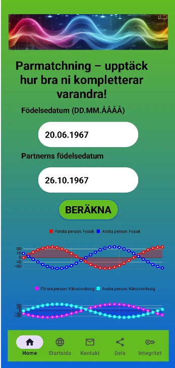

Relationer är energi. Förståelse är nyckeln. Är du redo att upptäcka en djupare nivå av harmoni med din partner, vän eller kollega?
Sovjetiska forskares hypotes: Redan i slutet av förra seklet kom forskare fram till en slutsats: nyckeln till ett långt och lyckligt äktenskap ligger i bioritmernas Spegelbild. Precis som i fysiken där motsatta laddningar attraherar varandra, bör rytmerna vara i motfas.
Om de "överlappar" varandra kan det skapa avvisning och konflikter (se exemplet med Leo och Sofia Tolstojs äktenskap nedan). Vi fokuserar på de två viktigaste rytmerna.
Vårt verktyg ger en omedelbar insikt i din och din partners rytmiska synkronisering genom att analysera dynamiken i de fysiska och emotionella cyklerna. Vi letar efter Spegelbildsharmoni – ett idealt tillstånd där den ena naturligt kompletterar den andras svaghet.
Harmoni är inte slumpmässig, den är beräkningsbar. Använd denna information för att bygga starkare och mer varaktiga band.

❌ Energimässig dissonans
Ett klassiskt exempel där rytmerna "överlappade". Identiska faser skapade ständig spänning, oförmåga att komplettera varandra och emotionell utbrändhet i ett långt äktenskap.

✅ Spegelbildsharmoni
Rytmerna var i perfekt motfas. Detta skapade ett unikt band där den ena partnern gav stabilitet när den andra var i en emotionell svacka.

❌ Överlappande rytmer
Även om paret var strålande, sammanföll deras bioritmer för tätt. Detta innebar att båda upplevde svackor samtidigt, utan att kunna stötta varandra i svåra stunder.

✅ Emotionell kompensation
Till skillnad från tidigare erfarenheter bildar rytmerna här en "spegelbild". Detta säkerställer ett naturligt lugn och harmoni som syns i deras långvariga relation.
Kontakt: manibioritmi@gmail.com